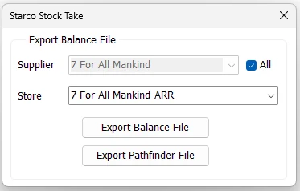

Starco Stock Take
Starco Stock Take exports IMS item and stock information in the file formats required by the handheld application used during physical inventory counting.

Criteria
| Field | Purpose |
|---|---|
| Supplier | Restricts the exported merchandise to one Supplier when All is not selected. |
| All | Includes merchandise from all Suppliers. When selected, the Supplier selector is disabled. |
| Store | The IMS Store whose item/stock data will be exported. |
Export Balance File
Export Balance File creates an XML file containing the selected Store's inventory records. The file name is based on the Store name and server date.
The exported balance includes the Supplier/Brand (Trend), Statistical Period/Season, EAN/Barcode, Item Code, Style, Description, Color, Size, current Store quantity, Cost and Price. Only inventory items are included.
- Select the required Store.
- Leave All checked for all Suppliers, or clear it and select one Supplier.
- Click Export Balance File.
- Select the destination folder.
- IMS creates the XML balance file with its schema and confirms completion.
Export Pathfinder File
Export Pathfinder File creates the scanning/item-master file used by the handheld stock-taking workflow. It contains the selected Store's inventory merchandise and the fields expected by that handheld application.
The export includes Supplier/Brand information, Barcode, Item Code, Style, Color and Color Name, Size, Description and pricing-related fields required by the stock-taking file format.
No matching items
If no inventory items match the selected Store/Supplier criteria, IMS does not create a file and displays a message instead.